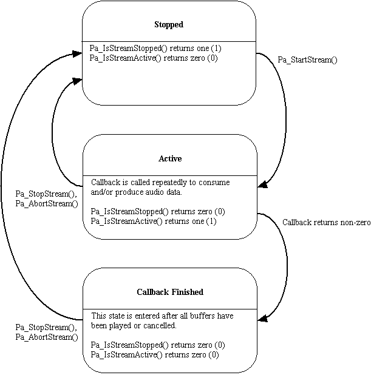

Proposed Changes to PortAudio API |
Updated: May 22, 2002
This document describes modifications to the PortAudio API currently being considered by the developer community. It is intended to capture the current state of discussions. The authors are the various members of the PortAudio community and are too numerous to mention. Please refer to the mailing list archives to see who said what.
We are still at the design stage with all of these proposals - if you think something is missing, could be improved, or would just like to comment please do so on the PortAudio mailing list.
http://techweb.rfa.org/mailman/listinfo/portaudio
The proposals above which are marked with a * are under construction, those marked with |C| are essentially complete but require community approval or comment before they are considered complete. The remaining proposals are essentially complete and will be implemented as-is unless significant objections are raised.
This document describes proposals that range in complexity from clarifications of existing API functionality, through to renaming API functions for consistency, through to significant feature additions. Due to the interdependency of many of the proposed changes, we plan to introduce all API changes simultaneously as part of release 19.
The developer community is in the process of reviewing all proposals. Most proposals are defined in sufficient detail to implement, however some completed proposals are dependent on proposals that are still under construction. Of the remaining unfinished proposals, only Improve Device Format Query System, Improve Latency Mechanisms, Allow Callbacks to Accept Variable framesPerBuffer, and Handling of Host-Specific Error Codes require significant attention. Both the Coding Style Guidelines and Revise Internal Host API proposals only effect implementors and do not effect the API definition itself. Refinement of these proposals is desirable but not critical to the development of release 19. Interested readers are advised to consult the Dependencies section of each proposal for more detailed information.
Some of the proposed changes will break existing client code. Usually these breakages involve renaming of constant identifiers or function calls. In a small number of cases additional parameters will be added to existing API functions. Concerned readers are advised to consult the Impact Analysis section of each proposal for further details.
____________
This proposal is sufficiently well defined to be implemented
There are conditions where a full-duplex stream needs to generate output but doesn't have any input available, or where it has too much input so some input needs to be discarded (not passed to the output.) There is also the case where output is needed, but the callback has (transiently) consumed so much CPU time that output has to be generated without the callback being called.
Currently (V17) the PortAudioCallback Function handles these underflow/overflow conditions by passing NULL buffer pointers to the callback. This can happen if the output is pre-rolled and there is not yet any input data. It can also happen if the input underflows.
A number of concerns have been raised about the current system: For PortAudio to discard input just because it is not needed for output is considered unacceptable for some recording applications. Passing of NULL buffer pointers has been deemed to be too error prone and requires too much housekeeping for simple programs.
See http://techweb.rfa.org/pipermail/portaudio/2001-October/000222.html and subsequent messages in various threads.
This proposal seeks to keep the PortAudioCallback as simple as possible for ease-of-use while providing full access to overflow/underflow information, and all input and output sample data when clients require it.
For streams providing input, the inputBuffer parameter will always point to a valid memory location containing framesPerBuffer frames of sample data in the requested format. The inputBuffer parameter will be NULL for output only streams. Similarly, the outputBuffer parameter will be NULL for input only streams, otherwise it will point to a valid memory location containing framesPerBuffer frames of sample data.
A new parameter will be added to the PortAudioCallback Function that gives the status of the data as bit flags.
typedef int (PortAudioCallback)( void *inputBuffer, void *outputBuffer, unsigned long framesPerBuffer, PaTimestamp outTime, unsigned long statusFlags, void *userData );
These bits may be set in the statusFlags parameter.
#define paInputUnderflow (1<<0) /* Input data is all zeros because no real data is available. */ #define paInputOverflow (1<<1) /* Input data was discarded by PortAudio */ #define paOutputUnderflow (1<<2) /* Output data was inserted by PortAudio because the callback is using too much CPU */ #define paOutputOverflow (1<<3) /* Output data will be ignored because no room is available. */
New rules will govern when the PortAudioCallback is called:
Note that the default full-duplex mode is intended to cover most common uses of PortAudio, where the client wants a simple audio streaming interface, and is happy to let PortAudio handle buffer underflow/overflow conditions when they occur.
This proposal involves adding a new statusFlags parameter to PortAudioCallback. This will require all clients to update their callback declarations accordingly. Clients who previously checked for NULL buffers will be able to remove such checks. Only clients who whish to take advantage of the callback flags, or the new paNeverDropInput mode will require significant changes.
____________
This proposal is open for discussion.
It has been noted that the current method (Pa_GetDeviceInfo()) of querying devices for supported sample formats, channels and sample rates is weak. It does not cleanly differentiate between 'PortAudio supported' formats and 'native' formats, and it is incapable of representing formats where the parameters are interdependent (eg where full duplex is only supported for certain sample rates.) We have also found that a static structure is not a good match for many host APIs where format discovery is performed by polling the driver. Even if a sound card supports arbitrary sample rates, the host API may only allow a client to poll to see whether a rate is available rather than providing the available rate ranges.
It has been noted that most (platform specific) audio APIs do a pretty bad job of allowing for device capability querying. Even the better APIs (ALSA is perhaps one) don't necessarily provide accurate information. This proposal should seek to maximise the amount of information that can be extracted from existing APIs while remaining expressive enough to take full advantage of APIs with more advanced capability querying systems should they become available in the future.
A number of options are being considered with regard to supplying clients with format information:
Use PaDeviceInfo only for representing information that can be expressed without querying the host API multiple times, or only check for "standard" formats, or leave it unchanged.
And/Or
Add a Pa_IsFormatSupported() function:
Pa_IsFormatSupported( PaDeviceIndex inputDevice,
int numInputChannels,
PaSampleFormat inputSampleFormat,
void *inputDriverInfo,
PaDeviceIndex outputDevice,
int numOutputChannels,
PaSampleFormat outputSampleFormat,
void *outputDriverInfo,
double sampleRate );
At a minimum this call would need to return values indicating whether the requested format(s) are supported natively, or will undergo conversion by PortAudio. The result could be a set of flags indicating:
There also needs to be a method for accommodating host-API-specific return flags.
At present it seems desirable to retain Pa_GetDeviceInfo() and the PaDeviceInfo structure. At a minimum PaDeviceInfo needs to contain name and host API type code fields:
typedef struct{
int structVersion;
const char *name;
PaHostApiTypeCode hostApi;
} PaDeviceInfo;
It was suggested that we could do things the way MME does: if Pa_OpenStream() is called with a NULL stream parameter then the stream isn't opened, but it is checked to see if the device supports the specified format - if the format is supported then paNoError would be returned, otherwise an error code would be returned. However, this has been ruled to be unsatisfactory, since querying for supported formats is really a different function from opening a stream.
This proposal will provide clients with more expressive methods for querying device capabilities, which should improve the utility of PortAudio. It is not yet clear what the full impact of this proposal will be.
____________
This proposal is open for discussion.
The current mechanism for setting latency is not considered optimal by all clients of the API. There seems to be some tension between using the framesPerBuffer parameter of Pa_OpenStream as a latency control parameter and as a specifier for the number of frames supplied to the callback. Specifying latency as a single millisecond value would be more user friendly for some users, however some host APIs need latency to be tuned by specifying buffer sizes and number of buffers. Additionally, it not clear whether separate input and output buffer counts would allow tuning of lower latencies in some circumstances.
A related issue is the need to improve the interface available to determine default latency parameters. The most recent proposal is documented below, however there is still some debate as to whether this is satisfactory.
See this thread: http://techweb.rfa.org/pipermail/portaudio/2001-October/000196.html
The numBuffers parameter to Pa_OpenStream() could be removed, and replaced by two new parameters inputLatencyFrames and outputLatencyFrames. These parameters allow clients to fine-tune latency in a portable manner. PortAudio implementations should select buffer sizes based on these parameters, if this is not possible they may choose the closest viable buffer size and latency instead. In such cases the PortAudio implementations should round-up (ie always provide equal or higher latency than requested.)
The special latency value of 0 indicates that the implementation should use the default latency values, this will produce the same behavior as passing 0 for numBuffers in existing PortAudio implementations. Clients may retrieve recommended safe latency settings using the following two functions:
unsigned long Pa_GetRecommendedLowLatencyFrames( PaDeviceIndex deviceID ); /* For interactive performance. */ unsigned long Pa_GetRecommendedHighLatencyFrames( PaDeviceIndex deviceID ); /* For playing sound files. */
Currently, when numBuffers>0, Pa_OpenStream will constrain the actual numBuffers so that the latency is within a valid range determined by the host API, or an environment variables such as PA_MIN_LATENCY_MSEC. Propose changing the behavior so that the requested value is honored as much as possible. This will allow the user to override the minimum if they know their system can handle it. This might be used, for example on patched Linux kernels
In addition to the portable latency setting mechanism just described, implementations may use the inputDriverInfo and outputDriverInfo Pa_OpenStream() parameters to provide host API specific latency setting mechanisms which directly reflect the underlying buffer passing scheme. For example, the MME driverInfo structure would provide a way to directly set the bufferSize and numberOfBuffers parameters for input and output. When driverInfo structures are passed to Pa_OpenStream(), using 0 values for their API specific latency settings should cause PortAudio to use Pa_OpenStream()'s latencySamples parameters.
In cases where Host API specific latency parameters may be limited to certain allowable ranges (buffer sizes in ASIO for example) a method for querying these limits should be provided. This will consist of host-API specific query functions declared in a host-api specific header file. These header files will also contain the declaration of the host API specific driverInfo structure.
The following two functions have been proposed to retrieve the estimated input and output latency of a stream. Both return the estimated latency in ms.
/* the following would operate directly on streams */ double Pa_StreamInputLatency( PaStream *stream ); double Pa_StreamOutputLatency( PaStream *stream );
The Pa_GetMinNumBuffers( int framesPerBuffer, double sampleRate ) function will be removed, as it's functionality is fulfilled by the get recommended latency functions.
This proposal provides both a high level mechanism for portable latency tuning, and suggests method for providing a host-API specific latency tuning interface. The provision of both default latency settings (via 0 valued latencySamples parameters) and query functions for recommended latency settings provide the needed flexibility for simple, and portable applications.
It is not clear whether a 0 latencySamples parameter produces the same latency as returned by Pa_GetRecommendedHighLatencySamples() or whether there is a separate default latency value, in which case there should also be a Pa_GetDefaultLatencySamples() function.
It is unclear whether the Pa_StreamInputLatency() and Pa_StreamOutputLatency() functions are needed, whether they relate directly to this proposal, and how they will be effected by the yet to be documented Improve Callback Timestamp Information proposal.
Should we provide a way of notifying the client if the latencySamples parameters have not been accurately honored?
This proposal will require all clients to alter their calls to Pa_OpenStream(). Clients who passed a 0 value for numBuffers will not need to significantly alter their code. Clients who manipulated numBuffers will need to either use the latencySamples parameters, or the host API specific interfaces, as they become available.
____________
This proposal is under construction.
Background
Some devices prefer, or even require, a particular value for framesPerBuffer. Some applications also prefer a particular buffer size because they may, for example, be doing FFTs. If possible, an integral number of application buffers can be fit into a device buffer. If an integral number of application buffers cannot be fit into an application buffer then some system for adapting between them is required. Stephane Letz implemented a block adapter for the ASIO implementation that could perhaps be made part of a utility library for PortAudio.
Adapting between different block size, unfortunately, involves extra memory movement and should be avoided. One way to avoid this is to allow an application to say "I can handle any value for framesPerBuffer". An example would be a simple algorithm like the one in "pa_tests/pa_fuzz.c". Its callback function could easily work with any value for FramesPerBuffer.
Proposal
Pa_OpenStream() should be able to accept a zero value for framesPerBuffer. When framesPerBuffer is zero, the implementation can choose any value that it thinks will work best given the other constraints. That value will be passed to the user callback.
To make the code more obvious, this constant could be used:
#define paFramesPerBufferUnspecified (0)
In order to find out what value the implementation chose, and also to help the application determine the actual latency, the following calls could be added:
int Pa_GetFramesPerBuffer( PaStream* stream );
int Pa_GetNumOutputBuffers( PaStream* stream );
int Pa_GetNumInputBuffers( PaStream* stream );
This proposal will not effect existing client code, since all clients will currently specify a non-zero framesPerBuffer parameter. Clients whose code can operate with a flexible number of framesPerBuffer may benefit from improved efficiency in some cases simply by specifying paFramesPerBufferUnspecified.
____________
This proposal is sufficiently well defined to be implemented.
Many PortAudio users have requested a blocking read()/write() API that will be supported in addition to the current callback based API. A blocking Read/Write API would allow a more natural style of multi-threaded programming, and facilitate single-threaded reactive applications, while insulating clients from platform-specific thread synchronisation facilities.
A blocking read/write API would also be useful when binding PortAudio to languages that don't easily support callbacks such as Python, Java, Lisp and Smalltalk. However in this case it has been noted that a blocking API is not sufficient - the host language also needs to support native threads to interact efficiently with blocking. Dannenberg observes that native thread support cannot be added without major redesign (based on a study of Python and Squeak), but given blocking calls, there are several ways to structure programs using non-native threads.
Adding a blocking Read/Write interface to PortAudio has been discussed on a number of occasions, including the following threads:
http://techweb.rfa.org/pipermail/portaudio/2001-August/000063.html a long thread about blocking calls.
http://techweb.rfa.org/pipermail/portaudio/2001-August/000137.html this is Roger Dannenberg's proposal and a subsequent discussion
http://techweb.rfa.org/pipermail/portaudio/2001-August/000144.html is a thread discussing using blocking APIs with other languages
If a NULL callback parameter is passed to Pa_OpenStream() then the stream will be opened in blocking mode. This enables users to call Pa_WriteStream() and Pa_ReadStream() to read and write sample data. (The PaErrorNum item "paNullCallback" becomes obsolete.)
Pa_WriteStream() writes a buffer of frames to a stream. The length of the buffer is arbitrary and specified by the frames parameter. Pa_WriteStream() returns when all samples have been copied from buffer. If necessary, Pa_WriteStream() will wait until buffer space becomes available. (Waiting on Unix will be the by-product of an I/O system call, waiting in Win32 will be implemented by waiting on an Event object, and waiting on MacOS 9 will probably require a busy wait.) High performance applications will want to match the length of the buffer to framesPerBuffer, but this is not a requirement.
The buffer parameter has the same semantics and format as the inputbuffer and outputbuffer parameters of a PortAudioCallback function. In particular, non-interleaved data is handled in the same way.
PaError Pa_WriteStream( PaStream* stream,
void *buffer,
unsigned long frames );
Pa_ReadStream() is similar, but it reads rather than writes.
PaError Pa_ReadStream( PaStream* stream,
void *buffer,
unsigned long frames );
Pa_ReadStream() returns paInputUnderflow if input data was discarded by PortAudio after the previous call and before this call. Pa_WriteStream() returns paOutputUnderflow if output data was inserted after the previous call and before this call. The mode flag paNeverDropInput is ignored because Pa_ReadStream() and Pa_WriteStream() are not synchronized.
There are two functions to determine the number of frames available for writing and reading. These functions may be called to determine whether calls to Pa_WriteStream() or Pa_ReadStream() will return immediately or will wait. The return value, if non-negative, is the maximum number of frames that can be written or read without blocking or busy waiting. A negative value is a PaErrorNum.
long Pa_StreamWriteAvailable( PaStream* stream ); long Pa_StreamReadAvailable( PaStream* stream );
The stream functions Pa_CloseStream(), Pa_StartStream(), Pa_StopStream(), Pa_AbortStream(), and Pa_StreamTime() work with the blocking API as well as with callbacks. Pa_StreamCPULoad() does not work with the blocking API and will return 0 when called on a blocking stream. PortAudio might be extended to give applications access to the internal routines that compute Pa_StreamCPULoad(). Applications using blocking calls could then bracket audio computation with these calls to determine the CPU load. (This additional functionality is not being proposed here.)
A rejected alternative is to allow Pa_WriteStream() and Pa_ReadStream() to return the number of frames actually written or read so that a Mac implementation could return immediately and avoid blocking. This would require applications to be prepared to handle partial read/writes. It seems simpler and more consistent to use "Available" to determine in advance whether blocking or busy waiting will occur if that is a concern. Also, note that data is almost certainly copied; however, it seems likely that the copy will be folded into any format conversion.
Implementations may want to provide a way for applications to be notified when data can be written or read. For example, one might want to know the file ID of an ALSA or OSS stream for use in a select() system call. Since this sort of information will be platform-specific and non-portable, no interface is defined here, but implementations can include a device-model-specific access function. If applications commonly need this information, we can think about how to make this more standardized.
Implementing blocking i/o will be quite simple for host APIs which are natively blocking-based. Under Windows (MME), the arrival of a buffer will signal an Event passed to waveOutOpen(). Pa_WriteStream() and Pa_ReadStream() will do all the work (no server threads necessary). Writes will make waveOutWrite calls. When no buffer is available, the writer will wait on the event and try again. Reading is similar. On the Mac, a double-buffer scheme can be set up where the Mac callbacks pick up data placed in buffers by Pa_WriteStream(). The double-buffer adds to the latency. Alternatively (and preferably) callbacks can be used only for notification, and Pa_WriteStream() can issue all the calls to write samples.
PABLIO currently contains a busy-wait ring buffer in "ringbuffer.c" which is generic, used in many projects and is pretty solid. This code could be a useful starting point for implementing the new blocking API on some platforms.
Pa_WriteStream() and Pa_ReadStream() are not thread safe. Applications wanting to call these from multiple threads should manage their own mutual exclusion. [Roger: Is any of PortAudio thread safe? I don't think so. This is good because it avoids many system calls for mutual exclusion.]
At one time it was suggested that implementations only implement blocking calls and that callbacks would be required to implement callbacks in terms of the blocking API. The current direction is that this decision should be made independently for each host API.
This proposal would extend the functionality of PortAudio without requiring any changes to client code with the exception that the PaErrorNum paNullCallback will no longer be defined. As noted above, implementation complexity is dependent on the target platform.
____________
This proposal is sufficiently well defined to be implemented. No objections have been raised.
http://techweb.rfa.org/pipermail/portaudio/2001-October/000210.html
Some native APIs use non-interleaved buffers, particularly those that support N>2 channels. Additionally, many client applications use non-interleaved buffers internally. In order to avoid adding unnecessary overhead, PortAudio should support both interleaved and non-interleaved buffers on all platforms.
The current PortAudio/ASIO implementation works as follows : ASIO native buffers are non-interleaved and the de-interleaving, format conversion and copying the data into PortAudio interleaved buffers is done in one loop. But if PortAudio supported non-interleaved buffers then we could use efficient vector operations even for native buffer <==> port audio buffers transfers.
A new sample format could be defined:
#define paNonInterleaved ((PaSampleFormat) (1<<31))
This could be used as a modifier flag to the buffer format fields of Pa_OpenStream(). When present, this flag would indicate that non-interleaved buffers would be passed to the callback. When not present, interleaved buffers would be used as is currently always the case. For example, the following code would open an interleaved stream:
Pa_OpenStream(&stream,
paNoDevice,
0,
paFloat32
NULL,
Pa_GetDefaultOutputDevice(),
2,
paFloat32,
NULL,
SAMPLE_RATE,
FRAMES_PER_BUFFER,
0,
paClipOff,
patestCallback,
&data );
And the following code would open a non-interleaved stream:
Pa_OpenStream(&stream,
paNoDevice,
0,
paFloat32|paNonInterleaved,
NULL,
Pa_GetDefaultOutputDevice(),
2,
paFloat32|paNonInterleaved,
NULL,
SAMPLE_RATE,
FRAMES_PER_BUFFER,
0,
paClipOff,
patestCallback,
&data );
In the user callback, the application would be passed a pointer to an array of buffers. The left and right buffers of a non-interleaved stream could be accessed as follows:
float *left = ((float **) inputBuffer)[0];
float *right = ((float **) inputBuffer)[1];
This new sample format could also be used to interrogate the host API to see if it supports interleaved or non-interleaved buffers. This would be achieved by reading the nativeSampleFormats field of the PaDeviceInfo structure.
This proposal extends the functionality of PortAudio without any impact on existing client code. It will require new conversion functions and all existing PortAudio implementations will have to be modified to reference these new conversion functions.
____________
This proposal is currently being discussed. Its final form depends on a number of other unfinished proposals.
The API changes described in this proposal are independent of all other proposals. However, changes to the host error mechanism defined in Handling of Host-Specific Error Codes, and the addition of new API functions due to the Blocking Read/Write API proposal may effect the implementation of this proposal. Changes to the API defined by the Improve Device Format Query System and the Improve the Latency Setting Mechanism proposals will need to be multi-host-API capable.
As the number of supported host APIs on each platform grows (WMME, ASIO, and DirectSound under Windows for example) client applications need to be able to select between different host APIs at run-time. At least four platforms supported by PortAudio have multiple host audio APIs. At present PortAudio allows clients to link in support for at most one host API.
This proposal is based this email: http://techweb.rfa.org/pipermail/portaudio/2001-December/000308.html
It will be necessary to supply clients with a method of displaying a textual description of the host API for each PortAudio device.
Some PortAudio functions do not operate on PortAudioStreams, but rather they operate on or return the global state of the PortAudio library as a whole. If multiple host APIs were present, some of these functions would have different implementations, or would return different values depending on which host API they applied to. These functions include:
int Pa_GetMinNumBuffers( int framesPerBuffer, double sampleRate );
PaDeviceID Pa_GetDefaultInputDeviceID( void );
PaDeviceID Pa_GetDefaultOutputDeviceID( void );
Note that Pa_CountDevices() could also be interpreted as applying to a specific host API.
PortAudio currently defines a per-host-API extension mechanism via the inputDriverInfo and outputDriverInfo parameters to Pa_OpenStream(). For code to take advantage of host-API-specific extensions when multiple host APIs are present there needs to be a way to establish which (statically identified) host API is associated with each device. This is because host-API -specific extensions must only be used in combination with devices supplied by that host API.
PortAudio should present clients with all of the devices made available by each host API. This means that some physical devices may be accessible though multiple host APIs. Since it will not be possible to open a full duplex stream with input and output devices from different host APIs, some clients may want to enumerate the available host APIs and only display devices from one host API at a time.
Introducing a new PortAudioHostAPI abstraction could fulfil the above requirements. At a minimum, this abstraction would need to have the following attributes:
Additionally, the following features could be present:
This proposal consists of the 7 modifications to the PortAudio API listed below.
1. Define a new PaHostApiTypeId enumeration, with fixed values for each host API:
/*
The PaHostApiTypeId enumeration contains constants for uniquely
Identifying each host API supported by PortAudio. This type
is used in the PaHostApiInfo structure below. Host API type ids
are guaranteed to never change, thus allowing code to be written that
conditionally uses host API specific extensions.
New type ids will only be allocated when support for a host API
model reaches "public alpha" status, prior to that developers should
use the paInDevelopment type id.
*/
typedef enum {
paInDevelopment=0, /* use while developing support for a new host API */
paWin32DirectSound=1,
paWin32MME=2,
paWin32ASIO=3,
paMacOSSoundManager=4,
paMacOSCoreAudio=5,
paMacOSASIO=6,
paOSS=7,
paALSA=8,
paIRIXAL=9,
paBeOS=10
}PaHostApiTypeId ;
2. Define a method for enumerating host APIs:
/*
Host API enumeration mechanism.
Host API indicies range from 0 to Pa_CountHostApis()-1.
Pa_GetDefaultHostApi() returns the index of the default host api.
The default host API is the lowest common denominator
Host API on the current platform and is unlikely to provide
the best performance.
*/
typedef int PaHostApiIndex;
PaHostApiIndex Pa_CountHostApis ();
PaHostApiIndex Pa_GetDefaultHostApi();
3. Provide a method for retrieving information about a given host API:
/*
Pa_GetHostApiInfo() returns a pointer to an immutable
PaHostApiInfo structure referring to the host API specified by hostApi.
If hostApi is out of range the function returns NULL. The returned structure
is owned by the PortAudio implementation and must not be manipulated or
freed. The pointer is only guaranteed to be valid between calls
to Pa_Initialize() and Pa_Terminate().
*/
const PaHostApiInfo * Pa_GetHostApiInfo(PaHostApiIndex hostApi);
struct{
int structVersion;
PaHostApiTypeId typeId; /* the well known unique identifier of this host API */
const char *name; /* a textual description of the host API for display on user interfaces */
}PaHostApiInfo;
4. Add a new field to PaDeviceInfo to identify the host API type:
struct{
...
PaHostApiIndex hostApi; /* note this is a host API index, not a type id*/
...
}PaDeviceInfo;
This would enable the following two code fragments to be written.
/* obtain the user-readable name of a device's host API */
Pa_GetHostApiInfo( deviceInfo->hostApi )->name;
/* implement special behavior for a specific host API */
if( Pa_GetHostApiInfo( deviceInfo->hostApi )->typeId == paWin32MME ){
InitialiseWmmeSpecificDeviceInfo();
}
5. Provide methods for finding per-host API default devices and latency settings:
PaDeviceIndex Pa_HostApiDefaultInputDevice( PaHostApiIndex hostApi ); PaDeviceIndex Pa_HostApiDefaultOutputDevice( PaHostApiIndex hostApi ); int Pa_HostApiMinNumBuffers(PaHostApiIndex hostApi, int framesPerBuffer, double sampleRate );
6. Provide functions for enumerating devices on a per-host-API basis. Note that this functionality is provided in addition to the current Pa_CountDevices() and Pa_GetDeviceInfo() functions:
PaDeviceIndex Pa_HostApiCountDevices( PaHostApiIndex hostApi ); PaDeviceIndex Pa_HostAPIGetDeviceID( PaHostApiIndex hostApi, PaDeviceIndex perHostApiIndex );
7. Re-implement the following existing functions to use the default host API. This would be a backwards compatible change except for Pa_GetMinNumBuffers() which gains an extra parameter.
PaDeviceIndex Pa_GetDefaultInputDevice( void ); /* returns the default device id for the default host API */ PaDeviceIndex Pa_GetDefaultOutputDevice( void ); int Pa_GetMinNumBuffers( PaDeviceIndex id, int framesPerBuffer, double sampleRate );
Note that Pa_GetMinNumBuffers() takes a device id, not a host API id. This minimises the need for clients to be aware of the multiple host API extensions.
The main disadvantage of this proposal it that it may make the API seem more complex for new users.
There is concern that this proposal is too complex, and that the simpler solution of simply adding a hostAPI string to the device info structure of each device would be sufficient. It is true that the simple solution would allow clients to duplicate the functionality of this proposal, provided hostAPI strings were published and guaranteed not to change in the future. However, the bulk of the functionality included in this proposal will need to be implemented internally to facilitate multiple host API support anyway. This proposal is based on the assumption that it is better to expose such functionality in the PortAudio API rather than require clients to reimplement what is already present internally.
There has been discussion about supporting "pluggable" host APIs - the general idea is that a client application could link against PortAudio and PortAudio would load the available Host APIs at run-time using "PortAudio Host API Plugins." Some people consider this to be an overly complex solution, and no significant advantages over a monolithic PortAudio dll have been submitted yet. Some people would like PortAudio to always be able to be statically linked with multiple host API support. The ability to load additional host APIs at runtime is considered desirable so long as the basic multiple host API mechanism does not require dynamic linking.
The overhead (both processor and memory) of the Multiple Host API support should be minimised on platforms which don't have multiple host APIs (such as BeOS and some handheld devices.) However, the multiple host API support will still be used on all platoforms, so as to reduce the burden on implementers if a second API becomes available, and also to allow reuse of common code in the multiple host API layer across all implementations.
The implementation will follow the methodology currently employed in PortMIDI described here: http://techweb.rfa.org/pipermail/portaudio/2001-December/000295.html
An implementation of the host API neutral "Façade" of this proposal exists here:
http://www.portaudio.com/docs/pa_drivermodel.c.txt
http://www.portaudio.com/docs/pa_drivermodel.h.txt
This proposal will involve the changes described below. Note that the string <HA> will be replaced with a host API tag for each implementation.
Each host API will have it's own Initialize function which PortAudio will call in response to client calls to Pa_Initialize and Pa_Terminate respectively. This will be the only identifier each host API implementation will be required to expose.
PaError Pa<HA>_Initialize( PaImplementation **impl );
PaImplementation is an internal data structure containing a set of function pointers for globally relevant functions: (function pointer type declarations omitted for simplicity:)
struct{
fptr terminate; /* takes the PaImplementation* returned by initialize */
fptr getHostAPIInfo;
fptr getHostError;
fptr getHostErrorText;
fptr countDevices;
fptr getDefaultInputDeviceID;
fptr getDefaultOutputDeviceID;
fptr getDeviceInfo;
fptr openStream;
fptr getMinNumBuffers;
} PaImplementation;
The function pointers in PaImplementation will point to the corresponding functions in current PortAudio implementations. The new multiple host API support code will take care of mapping per-host API device ids onto a single homogenous device id range. A significant advantage of this scheme is that it will require very little change to existing PortAudio implementations.
A new PaStreamImplementation internal data structure will be defined to contain function pointers to implementations of the stream functions for each host API. This structure will be placed at the head of implementation-specific data structures returned as PortAudioStream* in current implementations.
struct{
unsigned long magic;
fptr close;
fptr start;
fptr stop;
fptr abort;
fptr read;
fptr write;
fptr readAvailable;
fptr writeAvailable;
fptr active;
fptr time;
fptr cpuLoad;
} PaStreamImplementation;
Magic contains a unique bit pattern which should be set by implementations when a stream is opened, and cleared when it is closed. This technique will allow implementations to perform some degree of validation on PortAudioStream* passed to PortAudio.
This proposal will significantly improve the utility of PortAudio by allowing clients to support multiple host APIs in a single executable.
The only required change for existing clients will be to insert an extra deviceID parameter into calls to Pa_GetMinNumBuffers().
Since multiple host APIs may return devices with the same names, a minimum requirement for clients who want to be "multiple host API aware" will be to ensure that the appropriate host API name is displayed alongside device names in the user interface.
____________
This proposal is essentially complete, but is pending the final definition of PaHostApiTypeId (see below.)
If the PaHostApiSpecificStreamInfo structure defined in this proposal includes a PaHostApiTypeId host API identifier, then this proposal depends on the Support for Multiple Host APIs in a Single PortAudio Build proposal to define the form of the identifier.
Pa_OpenStream has always had the inputDriverInfo and outputDriverInfo parameters, which were defined to support passing host API specific information to PortAudio implementations. Currently these parameters are defined as void* and are not used by any implementation. Two uses of inputDriverInfo and outputDriverInfo are planned for the near future: passing device names to OSS drivers, and passing additional device ids for opening multichannel soundcards under MME.
The following structure could be defined and be placed at the head of all data structures passed to the inputDriverInfo and outputDriverInfo parameters of Pa_OpenStream:
struct{
unsigned long size; /* size of whole structure including this header */
PaHostApiTypeId hostApiType; /* host API for which this data is intended */
unsigned long version; /* structure version */
}PaHostApiSpecificStreamInfo;
The following host API specific extensions should be placed in separate header files rather than being placed in portaudio.h
___
The following structure is proposed for passing device names to the OSS implementation:
struct{
PaHostApiSpecificStreamInfo header;
char *deviceName;
}PaOSSSpecificStreamInfo;
A pointer to this structure could be passed to Pa_OpenStream() to request that a device other than the default dsp device be opened. This structure could be used for opening input and/or output devices.
___
The following structure is proposed for passing multiple interleaved device ids to the MME implementation in order to open a multichannel stream with some soundcards that support multichannel operation via multiple stereo (or other number of channels) interleaved devices. When this structure is passed, the MME implementation would ignore the deviceId parameters passed directly to Pa_OpenStream(), however it would not ignore the channelCount parameters.
#define paWMMEPassMultipleInterleavedBuffers 0x01 /* a flag */
struct{
PaHostApiSpecificStreamInfo header;
int *devicesAndChannelCounts; /* interleaved devices and channelCounts */
int deviceCount;
int flags;
}PaMMESpecificStreamInfo;
The deviceIdsAndChannelCounts field points to an array of ints containing multiple {deviceId, channelCount} pairs. The number of integer elements in the array must be two times the value of the deviceCount field. Specified deviceIds must have a host API type of Windows MME. Currently only one flag is defined: paWMMEPassMultipleInterleavedBuffers, this can be used to request that the raw, multiple interleaved buffers be passed to the callback.
The type of the inputDriverInfo and outputDriverInfo parameters could be changed to PaHostAPISpecificStreamInfo* however this may cause more trouble that it's worth.
The PaMMESpecificStreamInfo functionality may require the common buffer conversion functions defined in the Revise Internal Host API proposal to support (multiple interleave <==> unified interleave) and (multiple interleave <==> non-interleaved) conversions.
This proposal provides access to new platform-specific extensions. No existing client code will be modified. Only implementations that implement the extensions will be effected.
____________
This proposal is sufficiently well defined to be implemented immediately. However, the possibility of extending the scope of this proposal has been discussed in this thread: http://techweb.rfa.org/pipermail/portaudio/2002-January/000358.html
Currently the PaHostError error code is used to notify clients that a platform-specific error condition occurred. This is considered ambiguous and difficult to work with.
PortAudio should seek to avoid returning ambiguous paHostError error codes, and instead translate to portable PortAudio error codes. In the case of the pa_win_mme implementation this means translating the following MME error codes:
MMSYSERR_ALLOCATED to paDeviceBusy (new)
MMSYSERR_BADDEVICEID to paInvalidDeviceId (already defined)
MMSYSERR_NODRIVER to paDriverMissing (new)
MMSYSERR_NOMEM to paInsufficientMemory (already defined)
WAVERR_BADFORMAT to paSampleFormatNotSupported (already defined)
It is suggested that all implementations should be audited for their use of PaHostError.
There was some concern about polluting the PortAudio error code namespace with platform-specific error codes, and of the potential overhead of including platform specific error strings on other platforms. Another suggestion has been to add a Pa_GetHostErrorText() function.
If all error codes are mapped to PortAudio error codes do we need a PaHostError code and the Pa_GetHostErrorCode() function?
A suggestion has been made to extend Pa_GetErrorText() so that it retrieved host API specific error strings when a host error occurs.
This proposal improves the quality of PortAudio diagnostics. Client code that depends on paHostError code to flag certain conditions may be effected.
____________
This proposal is sufficiently well defined to be implemented.
Interaction between Pa_StartStream(), Pa_StopStream() and Pa_AbortStream(), and the ability to stop a stream by returning non-zero from the callback function was never clearly documented. After returning non-zero from the callback it was not clear whether the stream was stopped (meaning that Pa_StartStream() could be called immediately) or whether the Stream was in some intermediate state, requiring Pa_StopStream() to be called prior to being Started again. The availability of Pa_StreamActive() implied the latter case, but it was never documented.
In order for the common infrastructure to manage some stream state transitions (such as automatically stopping an active stream when closing it) a function to query whether the stream is stopped is required.
It has been suggested that it should be possible for the callback return value to indicate whether a stream should stop immediately or that it should stop after all queued buffers have been played (current behavior.) Thus providing similar behavior to Pa_StopStream()/Pa_AbortStream() from the callback.
This proposal documents the previously implicit state machine for PortAudio Streams and provides a new accessor function for determining whether the stream is stopped. It also defines 3 new constants which can be used as return values from the callback.
PortAudio streams will function according to the following state machine:

A new function Pa_IsStreamStopped() will be added to allow clients to determine whether the Stream is in the Stopped state.
New error codes paStreamIsStopped and paStreamIsNotStopped will be added (see below for usage.)
Stream functions will interact with the state machine as follows:
Pa_OpenStream() -> creates a stream in the Stopped state Pa_CloseStream() -> always closes a stream, if the stream is not Stopped it will be automatically aborted using Pa_AbortStream() before being closed. In the Stopped state: Pa_StartStream() -> transitions to Active state Pa_StopStream() -> returns paStreamIsStopped error Pa_AbortStream()-> returns paStreamIsStopped error Pa_IsStreamStopped() -> returns non-zero Pa_IsStreamActive() -> returns zero In the Active state: Pa_StartStream() -> returns paStreamIsNotStopped error Pa_StopStream() -> stops calling the callback and blocks until all buffers have been played : transitions to Stopped state Pa_AbortStream()-> if possible, discards all queued buffers instead of waiting for them to be played, otherwise same as Pa_StopStream() : transitions to Stopped state Pa_IsStreamStopped() -> returns zero Pa_IsStreamActive() -> returns non-zero In the Callback Finished state: Pa_StartStream() -> returns paStreamIsNotStopped error Pa_StopStream() -> transitions to Stopped state Pa_AbortStream()-> transitions to Stopped state Pa_IsStreamStopped() -> returns zero Pa_IsStreamActive() -> returns non-zero
Three new constants: paContinue(0), paFinish(1) and paAbort(2) will be defined for use as return values from the callback. Both paFinish and paAbort cause PortAudio to stop calling the callback. paFinish will cause a transition to the Callback Finished state once all buffers have been played, paAbort indicates that PortAudio may to attempt to cancel pending buffers before transitioning to the Callback Finished state. Note that returning any other non-zero value from the callback will have the same effect as returning paFinish, for maximum backwards compatibility.
As the host may buffer samples, it is possible for a perceptible delay to arise between the callback generating samples and them being heard. Sometimes it is desirable to wait for all generated samples to be played before closing a stream - for example when waiting for the end of a soundfile to complete playbeck. At other times it may be desirable to stop the stream as quickly as possible, without necessarily waiting for all queued samples to be played. This latter situation can occur when exiting an application or closing a document - providing good interactive performance to the end-user may necessitate aborting the stream rather than pausing for a significant period waiting for the queued samples to complete. These two use-cases are respectively addressed by the Pa_StopStream() and Pa_AbortStream() functions, and by the paFinish and paAbort callback return values.
It has been noted that not all host APIs support the cancellation of already queued samples or buffers, thus making it impossible to usefully implement Pa_AbortStream. In such cases, Pa_AbortStream() will have the same behavior as Pa_StopStream(), and returning paAbort from the callback will have the behavior as returning paFinish.
The multi-host-API common infrastructure requires a function like Pa_IsStreamStopped() so that it can automatically call Pa_AbortStream() if Pa_CloseStream() is called on an Active stream. The availability of this state information may also be used to implement error results when actions are not valid for the current stream state (calling Pa_StartStream() on a Active stream for example.)
Clients who currently return 2 from the callback will need to change the callback return value to paFinish to retain the expected behavior.
____________
Proposal is sufficiently well defined to be implemented. No objections have been raised.
PortAudio functions that return global information typically have names of the form Pa_Get*() (eg. Pa_GetDeviceInfo). However functions retrieving information from a stream do not currently follow this convention (Pa_StreamActive() and Pa_StreamTime()), additionally the Pa_GetCPULoad() function operates on a stream, but does not contain stream in its name.
PortAudio functions and parameter names that operate on integer identifiers use the string ID (all uppercase.) The paInvalidDeviceId error code is an exception to this convention.
Rename the stream accessor functions as follows:
Pa_StreamActive() -> Pa_IsStreamActive() Pa_StreamTime() -> Pa_GetStreamTime() Pa_GetCPULoad() -> Pa_GetStreamCpuLoad()
Note that CPU becomes Cpu, the convention of only capitalising the first letter of an acronym has been adopted in other proposals too.
Rename device identifier types and functions as follows:
paInvalidDeviceId -> paInvalidDevice PaDeviceID -> PaDeviceIndex Pa_GetDefaultInputDeviceID() -> Pa_GetDefaultInputDevice() Pa_GetDefaultOutputDeviceID() -> Pa_GetDefaultOutputDevice()
The use of the term index in PaDeviceIndex clearly denotes that the types has values within a closed range and may be incremented or decremented to access adjacent values. The ommission of "Index" from paInvalidDevice and the Pa_GetDefault* functions is justified by the fact that the only public representation of a device is its index.
This proposal improves the consistency of the naming scheme making the API easier to learn and remember. All clients which currently call Pa_GetCPULoad(), Pa_StreamTime(), Pa_StreamActive(), Pa_GetDefaultInputDeviceID(), or Pa_GetDefaultOutputDeviceID() will need to alter their code by renaming the function call. Clients who explicitly check for the paInvalidDeviceId error code, or use the PaDeviceID type will have to edit the spelling of these identifiers.
____________
This proposal is sufficiently well defined to be implemented.
Some host APIs (eg ASIO, MME and DirectSound under Windows NT) can require a reboot to free devices when they are not closed properly (due to a program not calling Pa_Close() either in error, or due to a crash.) As a quality of implementation issue PortAudio should seek to avoid such circumstances.
The definition of Pa_Terminate() should be extended as follows:
/*
Pa_Terminate() is the library termination function - call this after
using the library. This function deallocates all resources allocated
by PortAudio since it was initializied using Pa_Initialize(). Any open
PortAudioStreams are closed.
Pa_Terminate() MUST be called before exiting a program which
uses PortAudio. Failure to do so may result in serious resource
leaks, such as audio devices not being available until the next reboot.
*/
PaError Pa_Terminate( void );
One possible implementation strategy would be to add a "next" member to the internal stream data structure thus making it a linked list node, which could be linked into a list of all open streams.
Some concerns have been raised about the overhead involved in PortAudio having to keep track of which streams are currently open.
There has been some discussion about the behavior of nesting multiple calls to Pa_Initialize() and Pa_Terminate() - there is no intention of changing the current behaviour, which is that PortAudio has two states: "Initialized" and "Uninitialized" - in the Initialized state, Pa_Initialize() does nothing and returns an error, in the Uninitialized state Pa_Terminate() does nothing and returns an error.
This proposal changes the termination behaviour of PortAudio to reduce the likelihood of resource leaks.
On Windows, the new Pa_Terminate() behaviour would allow users who want full protection against device leakage to install a global Win32 exception handler that calls Pa_Terminate() before exiting when a crash occurs. Similar techniques (using SIGNAL handlers perhaps?) may be possible on other platforms where necessary.
____________
This proposal is under construction. Further suggestions and comments would be extremely welcome.
Since the PortAudio code is commonly edited on many different platforms using different editors it has been suggested that some conventions be adopted to improve readability and consistency. The general opinion is that the definition of such conventions, and their enforcement shouldn't be too extreme. There are also a number of unspoken implementation standards that could be usefully written down. This proposal consists of a list of mechanical formatting conventions, and a list of "quality of implementation" conventions. When completed this proposal will packaged with the distribution and placed on the web site as "Coding Style Guidelines for PortAudio Implementors."
The following formatting conventions should be adhered to in all PortAudio code:
AStyle ( http://astyle.sourceforge.net/ ) has been proposed as helpful tool for cleaning code, however we haven't yet decided whether to use it on an ongoing basis. Once our style guidelines have been established it is expected that contributors of each implementation will take responsibility for keeping their code clean, as an automated tool applied by someone unfamiliar with the code will probably just mess things up.
In addition to the formatting conventions noted above, the following "quality of implementation" coding guidelines are being proposed to establish a quality baseline for our implementations:
It has been suggested that we make an effort to minimise the use of global and static data in PortAudio implementations. Another related goal is to reduce name pollution in the global scope. Some possible guidelines in this regard are:
There will always be time to improve these guidelines, however we are making a concerted effort to document some standards before the next round of changes are implemented.
This proposal will require all existing code to be reviewed and possibly revised. This is not expected to be a "big-bang" operation. Rather it is envisaged that this will be a long term, ongoing process aimed at improving the quality of the PortAudio codebase.
____________
This proposal is under construction. Ideally, someone should go through all of the existing implementations and identify code that could be factored into a common library (parameter validation code for example.)
This proposal is dependent on the Support for Multiple Host APIs in a Single PortAudio Build proposal, and the Non-Interleaved Buffers proposal. The proposed conversion functions may be dependent on the MME multichannel via stereo pairs extension which is part of the Host API Specific Pa_OpenStream() Parameters proposal.
PortAudio defines a set of helper functions that all implementations share. It is envisaged that these internal functions will need to be revised in response to the changes proposed in this document. It would also be beneficial to take this opportunity to refactor any other common code fragments that could be shared by multiple implementations.
A refactoring of the buffer data conversion functions was proposed here: http://techweb.rfa.org/pipermail/portaudio/2001-November/000244.html However the proposal below is not quite the same. A significant benefit of formally specifying the interface to the buffer conversion functions is that it would facilitate the creation of optimised assembly language versions for different platforms.
A common set of buffer conversion functions should be defined and shared by all implementations. The buffer conversion functions should handle all permutations of:
"Channel-compensation" is necessary when certain devices require a higher number of channels than the user requests. With the Midiman Delta1010, for example, the device always needs to be fed 10 channels of output and you must read 12 channels of input (at least under ALSA without the "plug" interface).
The conversion functions could look something like:
void ConversionFunction_DestType_DestInterleave_SrcType_SrcInterleave_ ( void *dest, int destChannels, void *src, int srcChannels, int frames );
The dest and src parameters have the same format as those supplied to the PortAudio client callback.
Rather than have each implementation call these conversion functions directly, a 'factory function' could be implemented that returns a pointer to a conversion function based on parameters specifying the format of the source and destination buffers. This factory function could be called as needed when a stream is opened. The conversion functions could then be made static and hidden from the rest of PortAudio. The 'factory function' could have the following form:
enum PaEndiannes { paBigEndian, paSmallEndian, paHostEndian };
PaBufferConversionFunction* Pa_GetBufferConversionFunction(
PaSampleFormat destFormat, int destChannels, PaEndianness destEndianness,
PaSampleFormat srcFormat, int srcChannels, PaEndianness srcEndianness );
Note that the interleave/deinterleave status is encoded in the destFormat and srcFormat parameters. paHostEndian is used to represent the endianness of the current platform since some host APIs (eg ASIO) allow the driver to use samples in a different endianness from the host endianness. Another alternative is to encode sample endianness in PaSampleFormat - this would allow clients to write sample data of either endianness to PortAudio (e.g. soundfile playback direct from file) and benefit from PortAudio's byte swapping code.
The redundant use of channel parameters in both the conversion functions and the factory function is intentional and would allow channel-optimised conversion functions to be supplied for common cases such as 16-bit stereo.
This proposal currently only addresses buffer conversion functions, however it is important to identify other common code fragments that could be placed in the shared PortAudio library.
This proposal has not yet addressed the fact that the conversion functions also need to handle clipping and dithering.
It is not clear whether additional conversion functions will be needed to accommodate the MME interleaved stereo pairs for multichannel devices proposal.
It hasn't been established whether PortAudio will be extended to support all PaSampleFormats on all devices.
It isn't clear whether paCustomFormat is viable under this proposal, or how it would be accommodated.
When the client requested format and the host format are different a temporary buffer may be required to hold the converted data. However, in general PortAudio should aim to convert data in-place. Functions may be needed to establish when temporary buffers are needed, and to allocate them.
Due to a mismatch between the API buffer size and the PortAudio callback buffer size some Host APIs require PortAudio to shuffle data among multiple buffers in order to fulfil client requests - this has not yet been considered within the current proposal.
Memory allocation should probably be handled with platform specific functions such as Win32 GlobalAlloc() rather than using malloc()
This proposal only effects PortAudio implementors. Increasing the utility of shared code will improve the quality of all PortAudio implementations in terms of speed, size, and robustness. It should also reduce the effort involved in porting PortAudio to a new host API.
____________